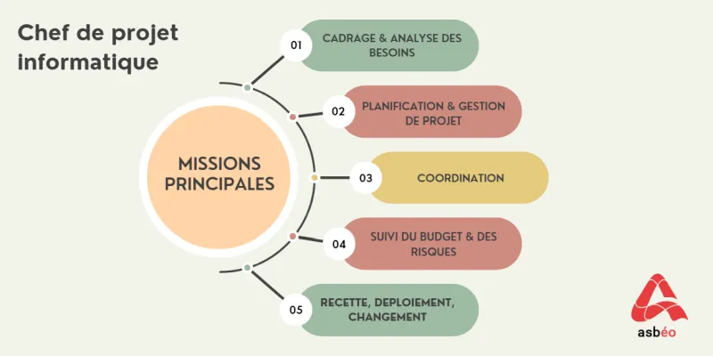

Le chef ou la cheffe de projet informatique définit, coordonne et supervise toutes les étapes d’un projet de sa conception au déploiement de la solution et en assurant une formation auprès des futurs utilisateurs. Il/elle vérifie le bon déroulé et l’avancée du projet en organisant et adaptant suivant les besoins et les imprévus les moyens matériels et humains. Il/elle a la charge de répondre aux besoins métiers en interne ou à des demandes clients, et de faire évoluer les outils, les processus et les méthodes.
 |